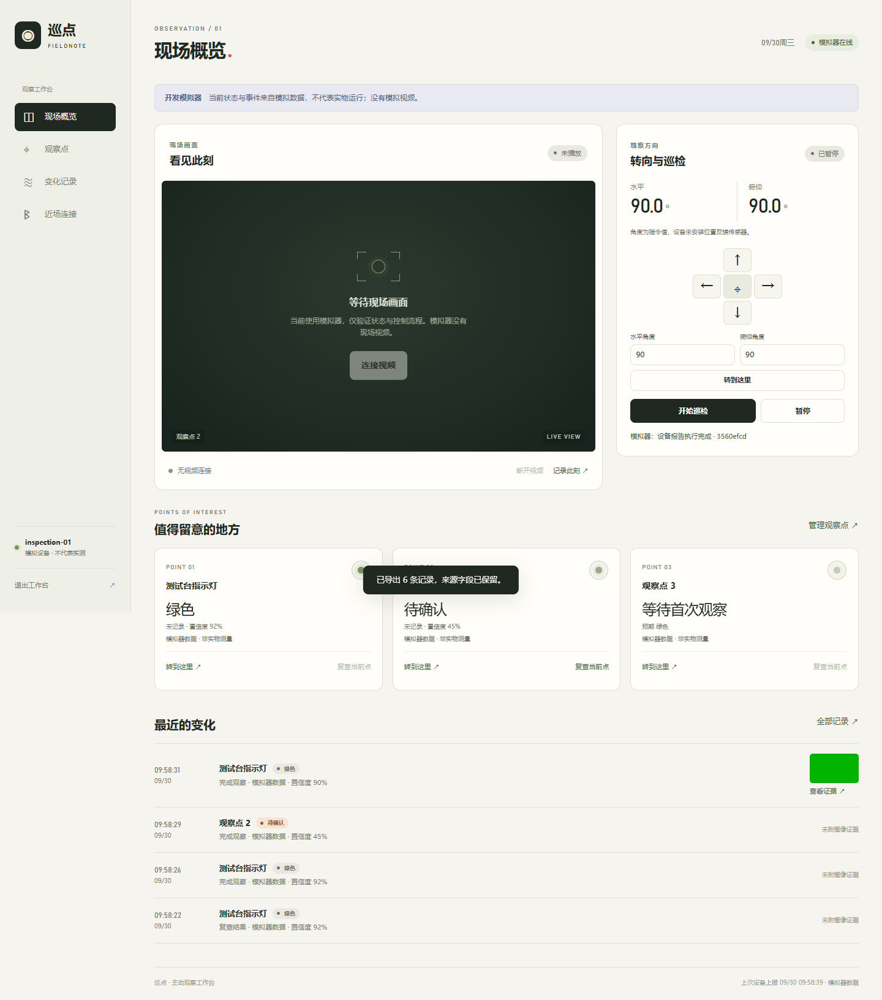
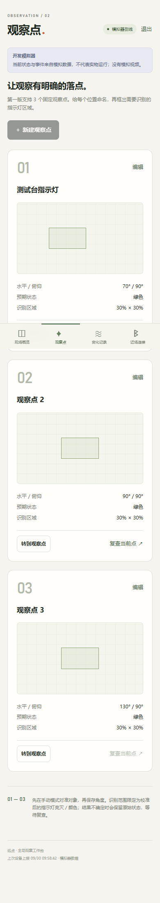
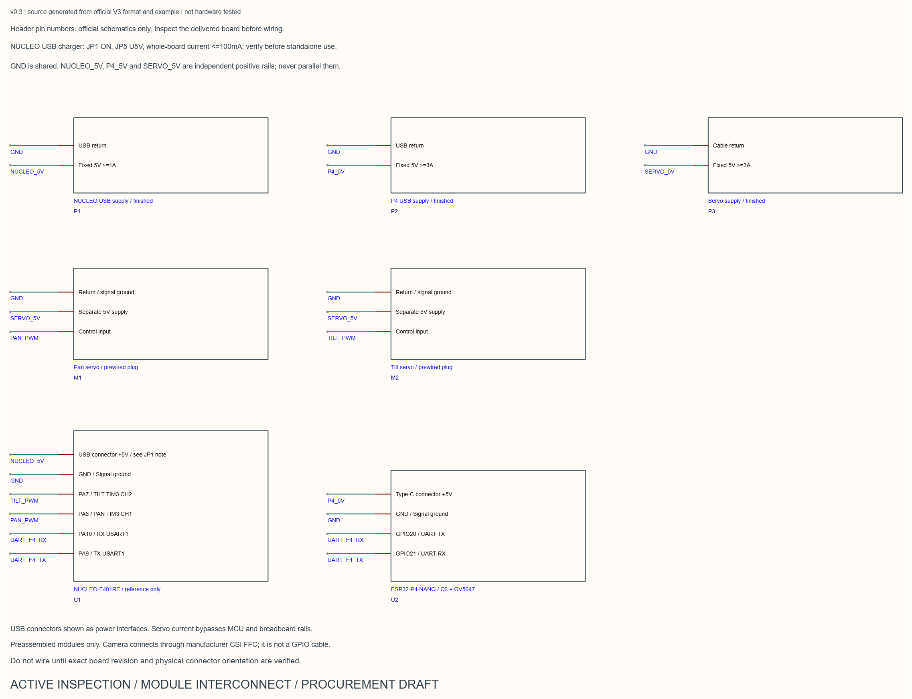

会话认证、实时状态、命令生命周期、事件与证据。服务19项、网页27项测试在公开副本通过。
巡点。
让观察，有据可查。
面向桌面设备的主动巡检终端工程：网页工作台、有限角度云台控制、事件与证据，连接在同一条可追溯的软件链上。
开发中 · 静态项目预览
以下是真实原项目界面与设计资料。截图来自模拟器；这里不连接设备，不提供真实视频或Node后端。完整模拟可按下方步骤在本机运行。
以下是真实原项目界面与设计资料。截图来自模拟器；这里不连接设备，不提供真实视频或Node后端。完整模拟可按下方步骤在本机运行。
现场概览、观察点、变化记录。
模拟来源始终有标记。已接收的指令不冒充执行完成，指令角度也不冒充编码器实测位置。

原项目真实测试截图：模拟设备在线，没有现场视频。
24组主机控制测试与F401离线编译通过。候选构建舵机输出默认禁用，实板未测试。
保留自有通信/ROI逻辑和P4集成源，C6复用锁定官方从机；机械与模块图仍待实物核对。
02 / OBSERVATION POINTS
手机，也能看清任务。
手机布局与观察点编辑来自原项目。Web Bluetooth依赖浏览器支持，不代表所有手机都能蓝牙连接。

从软件状态，回到模块边界。
这是模块互连设计图，不是实板接线验证。供电、针号、FFC、伺服脉宽、限位与打印配合均需后续实测。

不接硬件，也能试软件流程。
安装Node.js 24+，获取源码后在自己的终端执行。启动时会显示本次随机登录口令；模拟器没有现场视频。
git clone https://github.com/yangwei251003/active-inspection.git cd active-inspection/software/server npm ci --ignore-scripts npm run dev
云端完整服务需要另行部署Node与媒体服务。本页是GitHub Pages静态预览，未把静态页面说成后端已在线。